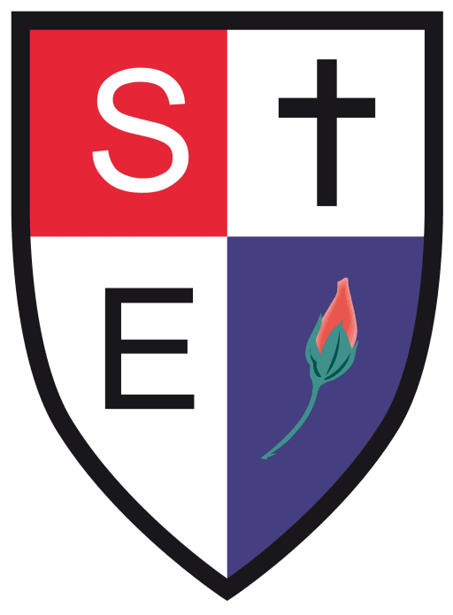

My Journey
Click each entry below to expand and learn more about my education path.
2023 - Present
 University of Leicester - Software Engineering BSc with a Year in Industry
University of Leicester - Software Engineering BSc with a Year in Industry
During my undergraduate studies, I focused on combining technical innovation with creative problem-solving, exploring various modules. My optionals reflected my focus on bridging creativity and programming with my focus on Front-End Development.
Year 1:
• Computing Fundamentals
• Programming Fundamentals
• Mathematics Fundamentals
• Computer Architecture
• Introduction to Object Oriented Programming
• Requirements Engineering and Professional Practice
• Algorithms, Data Structures and Advanced Programming
• Business and Financial Computing
Year 2:
• Software Architecture and System Development - I
• Project Management
• Operating Systems and Networks
• Databases and Domain Modelling
• Software Architecture and System Development - II
• Software Engineering Group Project
• User Interface Design and Evaluation
• Entertainment Technology
Year 1:
• Computing Fundamentals
• Programming Fundamentals
• Mathematics Fundamentals
• Computer Architecture
• Introduction to Object Oriented Programming
• Requirements Engineering and Professional Practice
• Algorithms, Data Structures and Advanced Programming
• Business and Financial Computing
Year 2:
• Software Architecture and System Development - I
• Project Management
• Operating Systems and Networks
• Databases and Domain Modelling
• Software Architecture and System Development - II
• Software Engineering Group Project
• User Interface Design and Evaluation
• Entertainment Technology
2021 - 2023
Windsor College - A-Levels in Media Studies, Photography and Graphic Communication
During my time at Windsor College Sixth Form, I expanded my creative expertise through my A-Levels and diverse areas of study including:
• Interactive Media – Web, app & game design.
• Advertising & Branding – Campaigns, packaging & communication graphics.
• Illustration & Print Design – Editorial, design for print & multimedia.
• Motion & Screen Design – Motion graphics, film & television visuals.
• Photography & Digital Imaging – Fashion, documentary, experimental & still-life.
• Video & Animation – Moving image, film & photographic installations.
• Creative Media Production – Developing sophisticated practical skills in media creation.
• Industry & Audience Awareness – Insight into evolving media relationships, products & industries.
🏆 Award: Excellence in Photography & Graphics (2022–2023)
Recognized as Best Year 2 Student in A-Level Photography and Graphic Communication for outstanding creativity, technical skill and achievement across both subjects.
• Interactive Media – Web, app & game design.
• Advertising & Branding – Campaigns, packaging & communication graphics.
• Illustration & Print Design – Editorial, design for print & multimedia.
• Motion & Screen Design – Motion graphics, film & television visuals.
• Photography & Digital Imaging – Fashion, documentary, experimental & still-life.
• Video & Animation – Moving image, film & photographic installations.
• Creative Media Production – Developing sophisticated practical skills in media creation.
• Industry & Audience Awareness – Insight into evolving media relationships, products & industries.
🏆 Award: Excellence in Photography & Graphics (2022–2023)
Recognized as Best Year 2 Student in A-Level Photography and Graphic Communication for outstanding creativity, technical skill and achievement across both subjects.
2016 - 2021

Slough and Eton C of E School - GCSEs
During my time at Slough and Eton C of E School, I selected a mix of creative and technological GCSEs as my options. Due to the COVID-19 pandemic, I did not sit formal GCSE examinations. Grades were awarded based on teacher assessments and coursework.
Achieved Nine GCSEs in:
• English Language
• Mathematics (Higher)
• English Literature
• Combined Science: Trilogy (Higher)
• Religious Studies
• Design and Technology
• Computer Science
• Art & Design
Achieved Nine GCSEs in:
• English Language
• Mathematics (Higher)
• English Literature
• Combined Science: Trilogy (Higher)
• Religious Studies
• Design and Technology
• Computer Science
• Art & Design